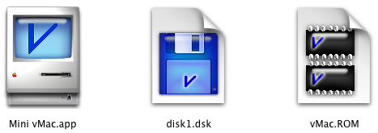

Download
icnsosx-1.0.0.zip (info) zipped files.

David Sibley created this nice set of replacement icons for Mini vMac in Macintosh OS X. They are too big to be appropriate as the default set of icons for “Mini” vMac, larger than the entire rest of the program (as any true OS X style icons must be), but this is not a real problem for actual use.
To install these icons into a copy of the Mini vMac application, download icnsosx-1.0.0.zip and expand the archive to get the folder 'icnsosx-1.0.0', which contains the folder "icons". The folder "icons" contains the files "AppIcon.icns", "DskIcon.icns", and "RomIcon.icns". Control click on the Mini vMac application (or right click with a two button mouse), and from the pop up menu, choose "Show Package Contents". Open the folder "Contents", which among other things contains the folder "Resources". Move the files "AppIcon.icns", "DskIcon.icns", and "RomIcon.icns" into the "Resources" folder, replacing the existing files with the same names.
In Mini vMac 3.0.3 or later, the ROM and Disk icons are not used unless Mini vMac is compiled with the option '-im 1'. (So if you don't use '-im 1', you only need "AppIcon.icns".)
IcnsOSX is copyright (C) 2007 David Sibley.
You can redistribute IcnsOSX and/or modify it under the terms of version 2 of the GNU General Public License as published by the Free Software Foundation. See the included file COPYING.
IcnsOSX is distributed in the hope that it will be useful, but WITHOUT ANY WARRANTY; without even the implied warranty of MERCHANTABILITY or FITNESS FOR A PARTICULAR PURPOSE. See the license for more details.